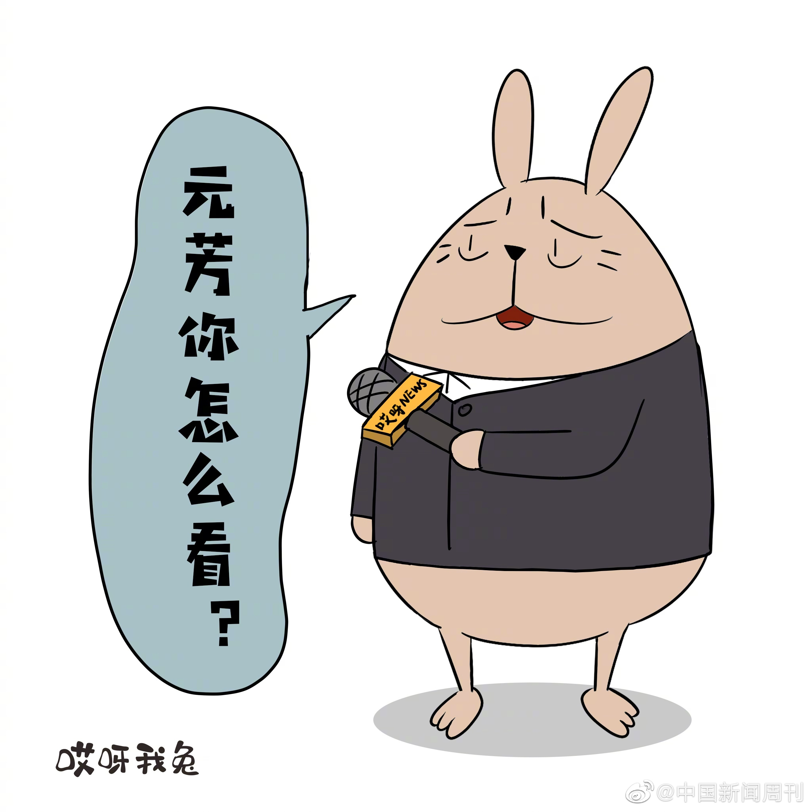

进步举措 。执行过程中也得申明育儿假不得转让，男性育儿假必须本人休，不然作废。另外，这种福利成本不能让企业单独承担，得配有企业减税措施吧。
。执行过程中也得申明育儿假不得转让，男性育儿假必须本人休，不然作废。另外，这种福利成本不能让企业单独承担，得配有企业减税措施吧。
@中国新闻周刊:
【#宁夏首创夫妻共同育儿假# 0至3岁子女父母每年可休10天】9月27日，在宁夏回族自治区十二届人大常委会第十五次会议上，《宁夏回族自治区妇女权益保障条例》（以下简称《条例》）高票通过。创新提出“鼓励用人单位对符合法律、法规规定育有子女的夫妻，在子女零至三周岁期间，每年给予夫妻双方各十天共同育儿假”。《条例》突出了反性骚扰和对女性未成年人的保护。就业中的性别歧视，《条例》第26条不仅禁止直接歧视，也命令禁止间接歧视。（中新网）
- 